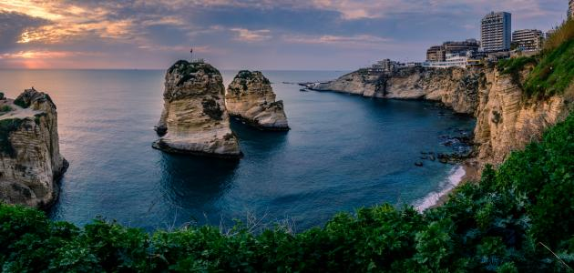
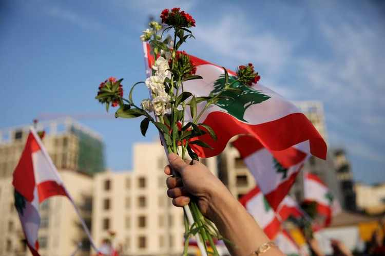

Lebanon is a small, war-torn country on the east coast of the Mediterranean Sea. Located on fertile territory at the crossroads of three continents—Africa, Asia, and Europe—it is a valuable and highly desired territory. Throughout its history, it has been the stage for conflicts between local tribes-people and world powers. After being ruled by the Ottoman Empire and by the French, Lebanon gained full independence in 1943.

“If Lebanon was not my country, I would have chosen it to be.”
“If Lebanon was not my country, I would have chosen it to be.”
- Khalil Gibran -

When you mention Lebanon in front of those who have been to our country, they can’t help but recall its famously kind and generous people, its rich and established culture, and its serene landscapes.

“Lebanon is more than a country;it is a message of freedom and an example of pluralism for East and West.”